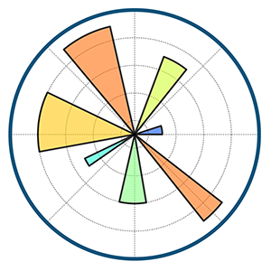
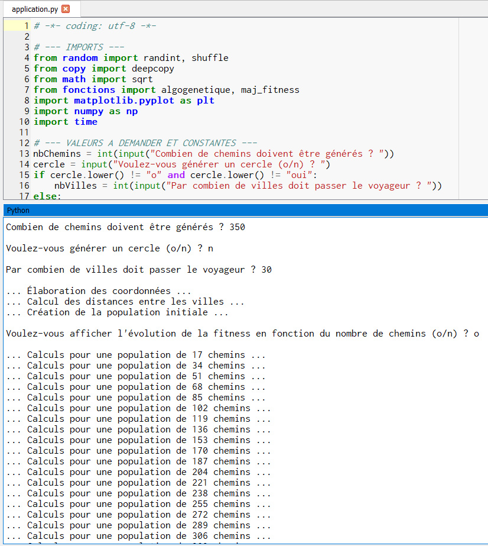
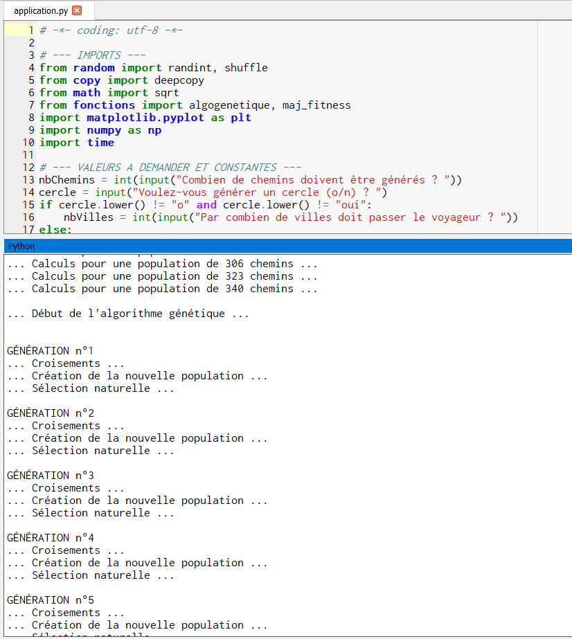
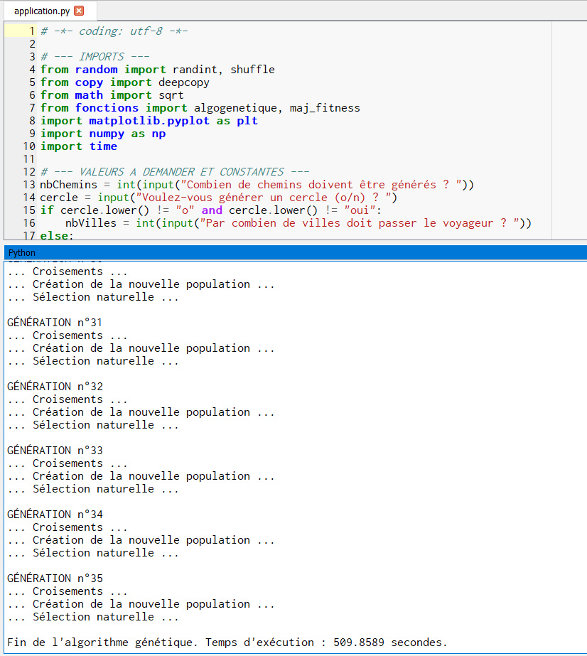
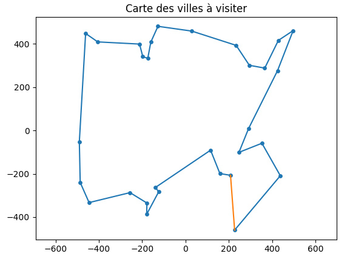
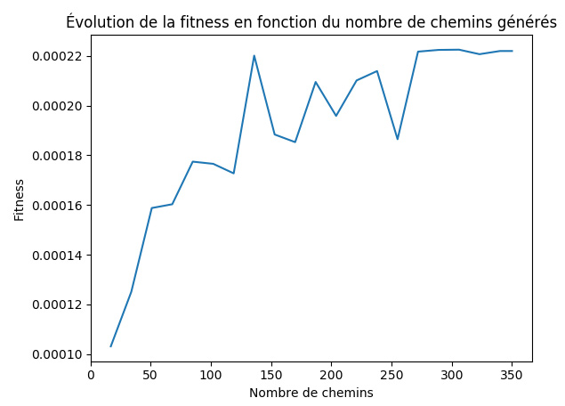
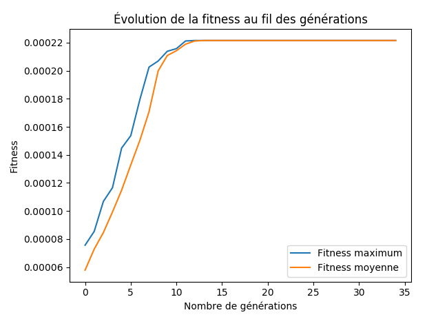

Projets Étudiants
Algorithme génétique (Septembre-novembre 2017)
Objectif : Implémenter un algorithme génétique, afin de répondre au problème du voyageur de commerce, en considérant les notions mathématiques associées.
Contexte : Travail en binôme, 2e année à l'IUT Informatique Paul Sabatier.
Outils :

Note finale : 15,8/20






Made with by Benoît Pannetier © 2019
Finding Space by Takahiro Sakamoto